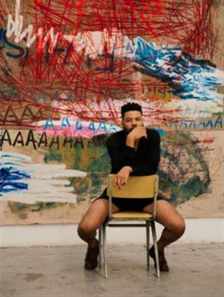

Drawings, writings, and doodles on a desk: the imprints of school life. Since 2013, the artist Oscar Murillo - in collaboration with the political scientist Clara Dublanc - has collected the canvases they sent to schools around the world, marked by thousands of school children as part of their long-term Frequencies project. Together, the canvases formerly affixed to desks for a year document the shared experiences of education across the world. Education paves the path for equal and sustainable development.
Global Goal 4 sets the goal to ensure equal access to primary and secondary education for all children around the world and to eliminate all discrimination in education. It is only through this, that we - as a global community - can promote strong global citizenship to promote equality for everyone. Learning is a lifelong process for us all.
See more about the Frequencies Project here, and explore how ART 2030 is working with artists towards Goal 4 by selecting the goal here.

OSCAR MURILLO Born in Colombia and based in various locations, Oscar Murillo (b. 1986) is known for an inventive and itinerant practice that encompasses paintings, works on paper, sculptures, installations, actions, live events, collaborative projects, and videos. Taken as a whole, his body of work demonstrates a sustained emphasis on the notion of cultural exchange and the multiple ways in which ideas, languages, and even everyday items are displaced, circulated, and increasingly intermingled. Murillo's work conveys a nuanced understanding of the specific conditions of globalization and its attendant state of flux, while maintaining the universality of human experience.
GOAL 4: QUALITY EDUCATION Ensure inclusive and equitable quality education and promote lifelong learning opportunities for all. Education liberates the intellect, unlocks the imagination and is fundamental for self-respect. It is the key to prosperity and opens a world of opportunities, making it possible for each of us to contribute to a progressive, healthy society. Learning benefits every human being and should be available to all.
SOURCE: GLOBAL GOALS
SOURCE: FREQUENCIES PROJECT